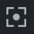
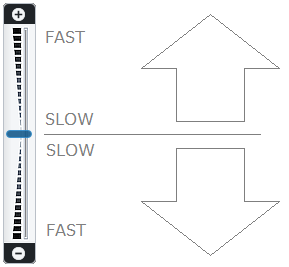

观众
查看器渲染视图的 3D 内容并呈现查看器工具栏、导航罗盘、内容浏览器、笔记浏览器和便笺簿。
导航指南针 指示视图方向和倾斜度（以度为单位）。指南针指北针指向植物的北方。
可以通过查看器工具栏、鼠标和/或触摸屏手势来操纵视图方向和视点。
内容浏览器允许您探索/浏览知识视图的资产内容。单击此处了解有关内容浏览器的更多信息。
显示管理器允许您管理查看器中显示的内容。单击此处了解有关显示管理器的更多信息。
笔记浏览器允许您探索和添加知识视图笔记。单击此处了解如何使用知识视图笔记。
便笺簿可让您浏览便笺簿页面。单击此处了解如何使用便笺簿页面。

查看器工具栏

活动模式或命令突出显示：
| |
积极的 | 不活跃 |

查看器工具栏提供以下功能：
| 将查看器设置为检查模式。在检查模式下，您可以旋转、平移或缩放视图并选择资产。 |
| |
| |
| 全部缩放- 将视图中所有可见资源居中的命令。 |
| Home - 将视图恢复为默认知识视图相机方向、位置和 3D 投影的命令。 |
| 放大- 用于放大靠近查看器中的资源的命令。 |
| 缩小- 用于放大到远离查看器中的资源的命令。 |
缩放区域- 用于将视图缩放到矩形区域的命令。单击“缩放区域”图标可以定义矩形区域。 | |
 | Focus - 设置观察者焦点的命令。单击“焦点”命令可让您在视图中的资产上选取焦点。选择焦点使视图的焦点居中。 |
X 射线- 用于将查看器中的所有资源设置为使用灰色透明外观显示的命令，类似于 X 射线图像。唯一保持显示不透明的资产是当前选取的资产。因此，此视图模式对于在大场景中快速查找选定的资源非常有用。 | |
设置- 用于更改查看器设置的命令。单击该命令可以设置画布边距、指南针和缩放滑块的显示、3D 投影、照明模式和内存限制。单击此处了解有关查看器设置的更多信息。 | |
| 创建便笺本页面- 用于创建新便笺本页面的命令。请参阅便签本。 |


变焦滑块
变焦滑块可让您移向焦点或远离焦点（放大、缩小）。

加载状态栏
在查看器中加载资源的过程可能是一个耗时的过程。加载状态栏显示加载查看器内容的进度。查看进度仅表示查看者可以看到的加载进度。例如，如果相机旋转，进度条将显示加载当前相机视角的新百分比。

加载状态栏在两种情况下会消失：
- 当内容完全加载到查看器中时。
- 当达到内存阈值时，无法加载更多内容。
如果达到内存阈值，右下角将显示图标和信息。

可以配置允许查看者使用的内存量。请参阅设置。
建议谨慎增加允许的内存，因为这可能会导致查看器性能降低。 |